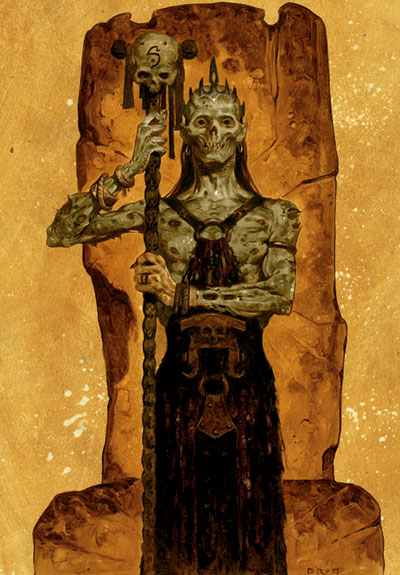

维沙伦 Velsharoon（巫妖之神）

费伦神系 微弱神力
别称：自夸者 The Vaunted，死灵大法师 Archmage of Necromancy，遗弃墓穴之王 Lord of the Forsaken Crypt
圣徽：戴着王冠咧嘴大笑的巫妖头骨，背景为实心的黑色六角形
居住界域：咒文之心 Dweomerheart
阵营：中立邪恶 NE
神职：死灵术 Necromancy，死灵法师 necromancers，邪恶的巫妖 evil lichs，不死 undeath
信徒：巫妖，死灵法师，以不死知识追求永生之人，龙巫教
牧师阵营：守序邪恶 LE，中立邪恶 NE，混乱邪恶 CE
神域：死亡 Death，邪恶 Evil，魔法 Magic，不死 Undeath
喜好武器：死灵骷髅之杖 Skull Staff of the Necromancer（长木杖 quarterstaff）
维沙伦是一位虚荣、自私、心胸狭隘、锱铢必较的精明神�o，沉迷于各种生与死的实验，对于那些「低等生物」的命运漠不关心。在很多方面，�k的行事方式仍与（�k不久前仍是的）凡人相去不远－只不过现在供�k驱策的力量要大上许多。
维沙伦的教会在费伦大陆上尚属新兴信仰，且几乎各个神殿都有自身内部的一套神职体系。许多维沙伦的牧师都致力于研究死灵术，并设法理解、扩充教会内各种有关 生、死、不死知识的搜藏。他们大多数都会创造数以百计的不死仆从－许多都是非常独特罕见的种类。每当一件不死生物「作品」不再具有存在价值之后，这些只顾着自己的研究者们通常会在其胸口印上维沙伦的圣徽，而后命令它自行在费伦大陆上随处游荡。其它的牧师则忙于各种支持教会发展的活动－偷盗墓穴、遗体防腐处 理、或是传播教导不死知识。有一些较具亲和力的低阶牧师有时也会替一般民众治疗轻微的疾病，以筹措资金、好感、以及外界支持－也能更容易地搜集有关敌对势力的情报。
维 沙伦的牧师在午夜－此时夜晚的秘密最能为人所发掘－祈祷以获得神术。虽然只是个新兴的信仰，但维沙伦的牧师们却已设立了许多圣日与一是；虽然各神殿间原本 各行其是的教义与理念目前已然统一，但各神殿之间（甚至单一神殿之内）却仍各自遵循不同的仪式。目前有两种仪式较为普及－由强大牧师主持的「墓穴束缚」（the Binding of the crypt）与「永生协定」（the Pact of the
Everlasting）－前者使信徒们得以不死生命的型态重生，后者使信徒被杀害时得
以 自动复活。这两种仪式都涉及许多可怕的符咒与牺牲大量善良生物的污秽献祭。该信仰中的重要学者们宣称，这是维沙伦本人用以达成永生不朽的七种仪式其中两 种。许多牧师都会兼职成为死灵师、神力信徒（Divine Disciple）、或是紫袍祭司（Wearer of Purple，如果是龙巫教的成员）。
历史/与众神的关系 History/Relationship：
当尚为凡人之 时，维沙伦原本是一位叛逃的红袍法师，是司萨兹坦（Szass Tam）的主要敌人之一。后来他在研究中得到了塔烙斯（Talos）的指引，依照风暴之王所教导的方法由凡人升为神�o。但�k很快地就明了风暴之王只不过是想制造一个可供驱使压榨的神仆，为此�k向阿组斯（Azuth）求助并结为同盟，并借着至高者（与蜜丝特拉 Mystra）的帮助阻止塔烙斯的报复。然而，�k随后又私下与塔烙斯和解并重新结盟，并开始向莎儿（Shar）示好－但名义上�k仍服侍着阿组斯。维沙伦憎恨希瑞克（Cyric）、耶各（Jergal）、以及克蓝沃（Kelemvor）－因为这些神�o都严重地阻挠�k的计划。
教义 Dogma：
生 与死是永生不灭的一体两面，如果听任自己倒向任何一面，那就是让自己被吞噬而随波逐流。真正伟大的力量存在于生与死之间的双重地带。借着探索与延展凡物的 型态与形式─即使是渺小的凡人生命─也能了解整个世界的复杂与奥秘。不要让任何因素动摇干扰这些延展的研究，因为最后的结果会证明这一路上的牺牲都是不可或缺的。知识就是力量，而生与死的知识则是统驭一切存在（不论是生命或非生命）的力量。
--
资料来源：费伦大陆信仰与神系《Faiths & Pantheons》
译者：一凡